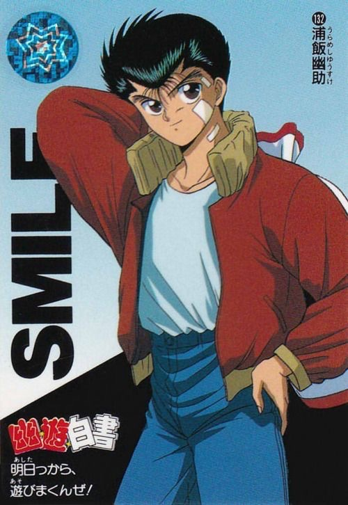
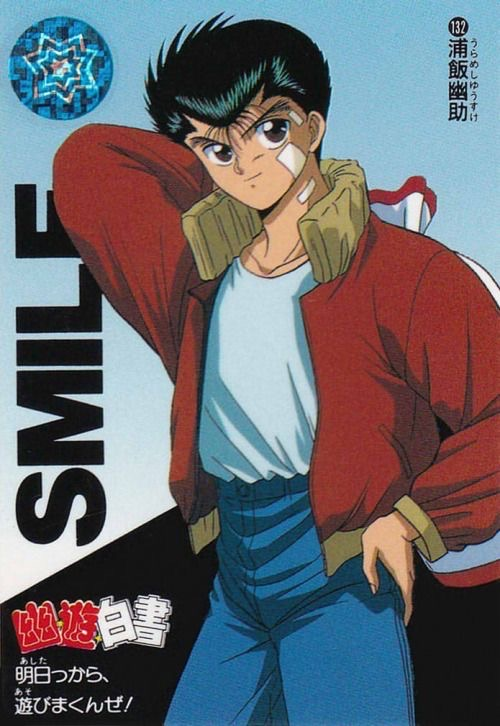

Anime has been around since the early 1960’s invented (of course) in Japan. While it had been popular for decades there, its popularity in America began in the early 90’s, starting with Studio Ghibli films like My Neighbor Totoro (1993,) and other pop culture favorites like Akira (1990.) From there, popular anime series that were all the rage in Japan started making their way to the US and airing on public television. These shows would only be able to be found at certain times of the week, like Pokemon on Saturday morning cartoon channels, or shows being broadcasted late at night on Cartoon Network’s Toonami, an after-hours anime session. This website displays the golden age of 90’s anime cartoons, including the plotlines of some of the most famous and classic anime shows to come out of this era!